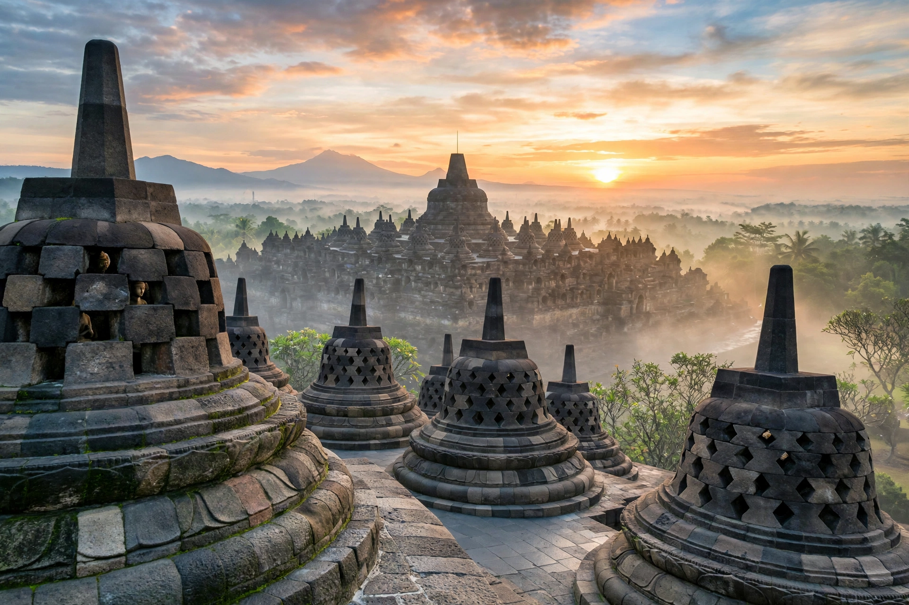

| Borobudur | |
|---|---|
 Borobudur at sunrise | |
| Location | Magelang, Central Java, Indonesia |
| Built | c. 780–825 CE |
| Dynasty | Sailendra |
| Religion | Mahayana Buddhism |
| UNESCO | World Heritage Site (1991) |
Borobudur is a 9th-century Mahayana Buddhist temple in Magelang Regency, Central Java, Indonesia. It is the world's largest Buddhist temple. The temple consists of nine stacked platforms — six square and three circular — topped by a central dome. It is decorated with 2,672 relief panels and originally 504 Buddha statues, and its main dome is surrounded by 72 Buddha statues, each seated inside a perforated, bell-shaped stupa.
Built during the reign of the Sailendra Dynasty around 780–825 CE, Borobudur was conceived as a monumental mandala and a representation of Buddhist cosmology: pilgrims circumambulate progressively higher terraces, passing reliefs illustrating the Lalitavistara, the Jataka tales, and the Gandavyuha, moving from the world of desire (Kamadhatu) through the world of forms (Rupadhatu) to formlessness (Arupadhatu). The temple was abandoned by the 14th century as Javanese rulers converted to Islam and populations shifted to eastern Java, possibly hastened by volcanic eruptions from nearby Mount Merapi.
The overgrown monument was brought to wider attention in 1814 under Sir Thomas Stamford Raffles, the British lieutenant-governor of Java. Major restorations were undertaken by the Dutch colonial government in 1907–1911 under Theodoor van Erp, and by UNESCO and the Indonesian government in 1973–1983, when the monument was dismantled and rebuilt with improved drainage. Borobudur was inscribed as a UNESCO World Heritage Site in 1991 and remains a major pilgrimage destination, especially at Vesak, as well as Indonesia's most-visited tourist attraction.
The structure uses roughly 1.6 million blocks of volcanic andesite stone, fitted without mortar. Its base measures about 123 metres per side. A hidden encased foot, discovered in the 19th century, bears reliefs of the law of karma (the Karmavibhangga).
Categories: Buddhist temples in Indonesia · World Heritage Sites in Indonesia · 9th-century establishments